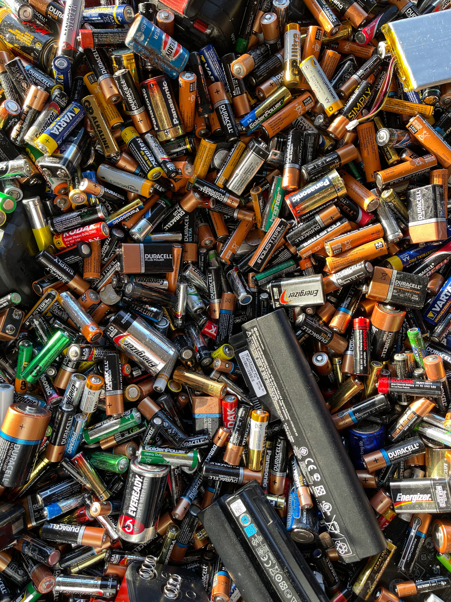
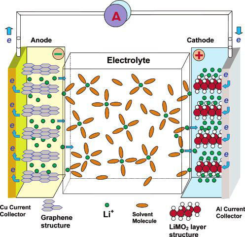
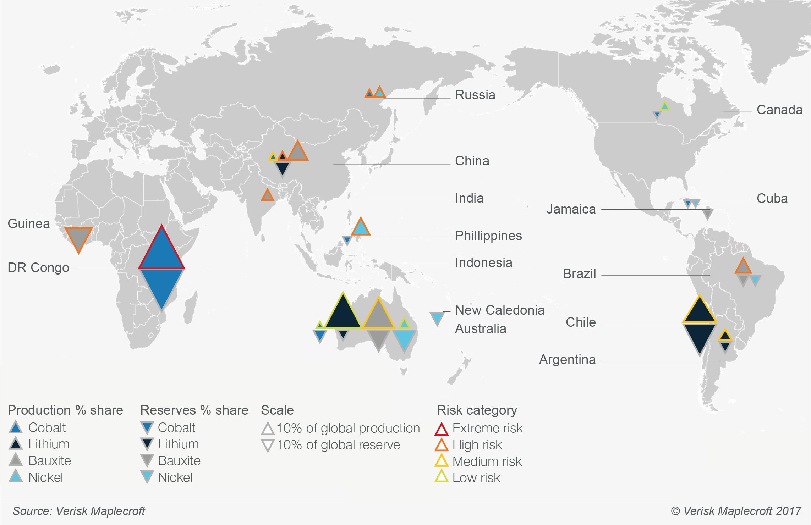

Definition

Traditional Batteries are defined as:
- A container consisting of one or more cells, in which chemical energy is converted into electricity and used as a source of power
- A group of two or more cells (see CELL sense 5) connected together to furnish electric current
Lithium-Ion Batteries are defined as:
- A lithium-ion (Li-ion) battery is an advanced battery technology that uses lithium ions as a key component of its electrochemistry
- A lithium-ion battery or Li-ion battery is a type of rechargeable battery. Lithium-ion batteries are commonly used for portable electronics and electric vehicles
How it works:
- When the battery is being charged up, Li+ lithium ions leave the positive electrode (cathode) and are stored in the negative electrode (anode). When it is discharged to produce an electric current, the Li+ ions move in the opposite direction2
- These cells, each with a voltage of a few volts, can be grouped together in varying numbers, depending on the capacity required to power a cell phone or car battery.
Supply Chain Overview
- The principal raw materials are lithium, nickel, cobalt, graphite, manganese, etc. The origins of these materials are mainly DRC, South Africa, Australia, Argentina, Chile and China.
- The Li-ion battery (LiB) market is being driven by the exponential demand for electric vehicles (EVs). Rising awareness of climate change, emission regulations, recent renewable energy initiatives, buyer incentives for EVs, and rising penalties for CO2 emissions all make LiB a good fit for EVs
- The battery comprises 30-40% of the total cost and is one of the most complex components of EVs. As a result, there is a big incentive to enter the LiB supply chain and/or to increase market shareLi-ion batteries are currently produced mostly by Asian manufacturers, surging demand for EVs cannot be met just by the existing production capacity. This gives new players (and new Gigafactories) an opportunity to enter the market and establish local value chains

Lithium Process
Recent & Relevant News
- A CBS News investigation of child labor in cobalt mines in the Democratic Republic of Congo has revealed that tens of thousands of children are growing up without a childhood today – two years after a damning Amnesty report about human rights abuses in the cobalt trade was published.
- The Amnesty report first revealed that cobalt mined by children was ending up in products from prominent tech companies including Apple, Microsoft, Tesla and Samsung. There's such sensitivity around cobalt mining in the DRC that a CBS News team traveling there recently was stopped every few hundred feet while moving along dirt roads and seeing children digging for cobalt.
- From as young as 4 years old, children can pick cobalt out of a pile, and even those too young to work spend much of the day breathing in toxic fumes.
Legal Issues & Major Controversies
- The extraction supply chain is rife with human rights abuses (forced labor) and environmental degradation. Because the “true cost” (human capital and natural resources) goes unpaid by purchasers of these raw materials, the sale of these materials is quite profitable. The impact is that local economies suffer and the profits are exported almost immediately upon extraction.
- Environmental Impacts: Mining Water Pollution:
- Acidic Drainage: Acidic drainage happens when sulphide minerals are exposed to both water and air. Metals: Waste water from mining and ore processing can contain metals that are naturally present in the rocks.
- Cyanide: Cyanide was used at some mills in Cobalt to recover the silver. It is still used at many mills to recover gold.
- Suspended Solids: Waste water from mining and milling can contain suspended solids, or sediment. In Cobalt, the runoff water from the clearing of rock to find silver veins caused large amounts of sediment to enter the lakes and streams, especially Cobalt Lake.
- Mines can be sources of airborne particulate matter, most commonly dust
- In addition to possible being a possible risk to human health, dust from mines can cause the contamination of local soils, and can affect vegetation and wildlife.
- According to the CDC, \"chronic exposure to cobalt-containing hard metal (dust or fume) can result in a serious lung disease called 'hard metal lung disease'\" – a kind of pneumoconiosis, meaning a lung disease caused by inhaling dust particles. Inhalation of cobalt particles can cause respiratory sensitization, asthma, decreased pulmonary function and shortness of breath, the CDC says.
Mapping the Supply Chain
- Asian countries' material supply chain is in sync with their production capacities. Asia is still the primary producer of LIB-specific components such as electrodes.
- Tesla and Panasonic are ramping up a domestic supply chain in the US (Nevada Gigafactory). Geographic clustering of component manufacturing may provide regional supply chain advantages and cost benefits. Cell or vehicle manufacturers who are located outside of these clusters might lose out.
- There is vertical integration in Asian electrode materials and cell production and can contribute to lower input costs for some manufacturers. The US has an immature supply chain. Most of its cell and battery plant operators are relatively new to the industry.
- Because Asian LiB capacity was created to serve domestic consumption and export markets serving consumer electronics markets, as incumbents, they have robust supply chains and significant production experience prior to EVs.
Supplier Engagement Model

Materials Processing:
Processing natural resources by chemical reaction:
- Material separation, purification, and alteration in preparation for the manufacturing stage Production of Cathode, Anode, Electrolyte components.
- Transporting processed materials to product manufacturing facilities
Manufacturing Processing:
Manufacture of battery cell components:
- Manufacture of battery cell
- Manufacture of other battery pack components, including BMS, passive cooling system and housing
- Assembly of the battery pack
Use:
- Electric Vehicles (EV): entirely powered by batteries that are charged with electricity from the power grid. EVs have no internal combustion engine.
- Once processed and synthesized, the materials are converted into battery components (cathode, anode, separator, electrolyte and housing).
- These components are used to manufacture battery cells then assembled into battery packs (which house multiple battery cells, add controls, manage temperature and protect the batteries). The majority of this is done in China, Japan, South Korea, the US and the EU.
Governance
- Once processed and synthesized, the materials are converted into battery components (cathode, anode, separator, electrolyte and housing)
- These components are used to manufacture battery cells then assembled into battery packs (which house multiple battery cells, add controls, manage temperature and protect the batteries)
- The majority of this is done in China, Japan, South Korea, the US and the EU.
- Asian countries' material supply chain is in sync with their production capacities. Asia is still the primary producer of LIB-specific components such as electrodes, separators, and electrolytes
- Tesla and Panasonic are ramping up a domestic supply chain in the US (Nevada Gigafactory). Geographic clustering of component manufacturing may provide regional supply chain advantages and cost benefits. Cell or vehicle manufacturers who are located outside of these clusters might lose out
Benchmarks
Grid to upload
Monitoring
- Responsible Cobalt Initiative (RCI) led by OECD, organizes seminars with its suppliers, and established a communication and grievance mechanism system for transparency on their website. In regards to employee safety the company has ensured all employees have full benefits, safety drills and and on site training for physical safety.
Verification
- Due Diligence Rules for Responsible Mineral Supply Chains, requires suppliers in the mineral supply chain to sign it, has a Supply Chain Sustainability Management Committee under the Corporate Sustainability Management Committee, and then performs audits on those supply chains.
Reporting
Life Cycle Assessments
Images / Graphs to upload
Other Challenges & Impacts
- Political costs and downsides that recycling Li-ion batteries could help address. 50% of the world’s production of cobalt comes from the Democratic Republic of the Congo and is tied to armed conflict, illegal mining, human rights abuses, and harmful environmental practices
- Recycling batteries and formulating cathodes with a reduced concentration of cobalt could help lower the dependence on such problematic foreign sources and raise the security of the supply chain
- Labor practices = unhealthy, unsafe, unsustainable workforce
- Environmental impacts at extraction = irreversible damage
- Material recovery = diminishing supply
Innovations
- By streamlining recycling logistics, Equilibrate eliminates potential waste streams for customers.
- Materials that are recycled are tracked for customers. Data can be accessed by customers and used for waste reduction initiatives. Additional cost savings in waste fee elimination.
- Cost of materials is 71% of total cost in Lithium-ion batteries. Service streamlines recycling logistics, and eliminates disposal fees for used batteries.
- Recycled Lithium-ion battery materials are delivered at a reduced cost through point system, providing further incentive to use recycled materials.
Conclusions
- 50% of the world’s production of cobalt comes from the Democratic Republic of the Congo and is tied to armed conflict, illegal mining, human rights abuses, and harmful environmental practices.
- Recycling batteries and formulating cathodes with a reduced concentration of cobalt could help lower the dependence on such problematic foreign sources and raise the security of the supply chain.
- As demand for lithium-ion batteries increases the need for established recycling standards becomes more important.
Sources and References
- https://www.energy.gov/sites/prod/files/2015/06/f23/Lithium-ion%20Battery%20CEMAC.pdf
- https://ec.europa.eu/jrc/sites/jrcsh/files/jrc105010_161214_li-ion_battery_value_chain_jrc105010.pdf
- https://www.econstor.eu/bitstream/10419/217243/1/hbs-fofoe-wp-168-2020.pdf
- https://seekingalpha.com/article/4265367-european-battery-plant-expansion-and-implied-lithium-demands
- https://batteryuniversity.com/learn/article/types_of_lithium_ion#:~:text=NMC%20is%20the%20battery%20of,due%20to%20reduced%20cobalt%20content.
- https://spendmatters.com/2017/10/26/new-research-supply-chain-risks-lurking-behind-electric-vehicle-boom/
- https://www.spglobal.com/en/research-insights/articles/lithium-supply-is-set-to-triple-by-2025-will-it-be-enough
- https://www.whitecase.com/publications/insight/building-sustainable-battery-supply-chain-blockchain-solution
- https://www.sciencedirect.com/science/article/pii/S2542435117300442
- https://www.maplecroft.com/insights/analysis/chinas-lithium-supply-chain-strategy-solidify-diversify-and-control/
- https://www.ft.com/content/455fe41c-7185-11e9-bf5c-6eeb837566c5
- https://about.bnef.com/blog/breakneck-rise-chinas-colossus-electric-car-batteries/
- https://www.maplecroft.com/insights/analysis/lithium-ion-batteries-raw-material-to-finished-product/
- https://www.catl.com/en/uploads/1/file/public/202009/20200914211844_isu5va488a.pdf
- https://www.byd.com/sitesresources/common/tools/generic/web/viewer.html